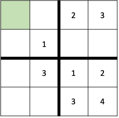

Kapitel 2 Grundlagen der Logik#
2.1 Lernziele#
In diesem Abschnitt lernen wir die folgenden Dinge:
Syntax/Schreibweise der Aussagenlogik
Logische Aussagen interpretieren und herleiten
Gesetze der Aussagenlogik
Prädikatenlogik und Quantoren formulieren
Die Gödelschen Unvollständigkeitssätze
Lernziele
Syntaktisch korrekte logische Formeln konstruieren
Interpretieren von logischen Ausdrücken
Folgerungen von logischen Aussagen mittels Wahrheitstafeln und Gesetzen der Aussagenlogik
Ausdrücke mithilfe von Quantoren formulieren und negieren
Verständnis des Gödelschen Unvollständigkeitssatz erlangen
2.2 Einleitung mit Sudoku#
Wir wollen uns in diesem Kapitel mit Logik auseinandersetzen. Dabei lernen wir zwar neue Dinge, es ist aber wichtig er einmal fest zu halten, dass wir alle von Natur aus logisch denken können ohne, dass wir die Gesetze der Logik dafür verstehen müssen. Es scheint eher so, dass wir das was wir natürlicherweise machen hier formalisieren wollen.
Um Sie davon zu überzeugen, dass Sie Logik bereits verstehen, will ich Ihnen folgendes Beispiel zeigen.
Nehmen wir an wir spielen Soduku. Wir beschränken uns aber hierfür auf Zahlen \(1\) bis \(4\) statt \(1\) bis \(9\).
Nehmen wir an wir haben also folgendes Sudoku gegeben:

Wir betrachten das grüne Feld.
Welche Zahl muss hier rein?
Sie werden intuitiv vermutlich 4 sagen.
Doch wir wollen, das ganze Schritt für Schritt einmal durchgehen:
Dabei kürzen wir folgende Aussagen ab:
A=”Die eins muss in das Kästchen.”
B=”Die zwei muss in das Kästchen.”
C= “Die Drei muss in das Kästchen.”
D= “Die Vier muss in das Kästchen.”
Wir nennen dabei \(A,B,C,D\) logische Aussagen.
Nun wissen wir aus den Regeln des Spiels, dass eine der Zahlen \(1,2,3\) oder \(4\) in das Kästchen muss.
Oder mit unseren logischen Ausdrücken ausgedrück:
A oder B oder C oder D
In der Logik schreibt man nun statt “oder” auch \(\vee \).
Also gilt:
\( A\vee B\vee C\vee D\)
Ok soweit so gut. Was wissen wir noch?
Wir wissen, es darf keine 1 sein, denn diese Zahl ist bereits im Quadranten. Außerdem darf es keine 2 oder 3 sein, denn diese Zahlen sind in der selben Zeile.
Damit wissen wir, dass gilt:
Nicht A und Nicht B und Nicht C.
Das ist aber das selbe wie
Nicht (A oder B oder C).
Hier haben wir schon ein erstes Gesetz der Aussagenlogik angewendet. Das Gesetz von de Morgan.
Anstatt nicht schreiben Mathematiker:innen \(\neg\) und anstatt und schreiben sie \(\wedge\).
Damit ergibt sich also:
\( \neg A \wedge \neg B \wedge \neg C \).
Zusammen mit dem Ersten Teil: ergibt sich als Ausdruck:
\((A\vee B\vee C\vee D)\wedge (\neg A \wedge \neg B \wedge \neg C)\)
Es soll also A oder B oder C oder D gelten und nicht A und nicht B und nicht C. Wir alle wissen, dass das nichts anderes heißt, dass \(D\) gilt. Also dass die Zahl die 4 sein muss. Aber warum eigentlich? Welche Logischen Gesetze stecken dahinter? Genau das wollen wir in diesem Kapitel genauer untersuchen.
2.3 Aussagenlogik#
Wie wir in der Einleitung gesehen, haben beschäftigen wir uns im ersten Teil mit der sogenannten Aussagenlogik.
Definition 13
Eine Aussage ist ein Satz, der entweder wahr oder nicht wahr(falsch) ist.
Example 12
Folgendes sind Beispiele für Aussagen
“Heute hat es geregnet”
3+5=9
4>3
Folgendes sind keine Aussagen:
” Wie viel ist 3+2?”
3+5
x:=2
Häufig kürzen wir Aussagen mit Großbuchstaben ab.
Z.B. A=”Heute hat es geregnet” oder $B=”3+5=9”.
Wir nennen dann \(A\) und \(B\) Aussagenvariablen.
Wir können nun Aussagen mithilfe von Operatoren verknüpfen. Dafür haben wir verschiedene Symbole zu Verfügung, die man alltagssprachlich wie folgt interpretieren kann:
\(A\wedge B\) heißt A und B
\(A\vee B\) heißt A oder B
\(\neg A\) heißt nicht A
\(A\to B\) heißt A impliziert B
\(A\leftrightarrow B\) A und B sind äquivalent.
Wir werden im Kapitel zu Semantik noch genauer verstehen, was diese Operatoren genau bedeuten. Das reicht uns aber erstmal als Intuition für das nächste Kapitel.
Syntax der Aussagenlogik - Formeln#
Die Syntax der Aussagenlogik beschäftigt sich nur mit der Schreibweise von verknpüften Aussagen. Also wie können wir aus gegebenen Aussagen neue Aussagen erzeugen. Dabei ist die Bedeutung der Aussagen erst einmal nicht bedeutend.
Wir nennen zusammengesetzte Aussagen auch Formeln und Sie können wie folgt iterativ erzeugt werden:
Definition 14
Eine Formel ist eine Kombination aus Aussagen und logischen Operatoren und kann wie folgt iterativ erzeugt werden:
Einzelne Aussagen sind Formeln.
0 (die immer Falsche Aussage) und 1 (die immer wahre Aussage) sind Formeln.
Wenn \(F_1\) und \(F_2\) Formeln sind, so sind auch folgende Ausdrücke Formeln:
\(\neg F_1\)
\((F_1 \vee F_2)\)
\((F_1 \wedge F_2 )\)
\((F_1 \to F_2)\)
\((F_1 \leftrightarrow F_2)\).
Achtung
Denken Sie daran Klammern zu setzen um Ausdrücke zu bilden.
Example 13
Seien \(A,B,C\) Aussagen. Dann sind folgende Ausdrücke Formeln:
\((\neg A) \wedge B \wedge C\)
\((\neg A) \wedge B \vee (B\wedge C)\)
\((\neg A) \wedge B \wedge C \to A\)
\(((\neg A) \leftrightarrow (B \wedge C)) \to A\)
Folgende Ausdrücke sind keine Formeln:
\( A\neg B\)
\(\leftrightarrow B \wedge\) C$
\(A\neg\).
Semantik der Aussagenlogik - Wahrheitstafeln#
Wir haben nun im letzten Abschnitt gesehen, wie wir Formeln syntaktisch korrekt formulieren können. Doch was bedeuten die Formeln? Wann sind zwei Formeln identisch und wann ist eine Formel selbst wiederum wahr oder falsch. Mit diesen Fragestellung beschäftigt sich die Semantik der Aussagenlogik. Das wichtigste Werkzeug hierfür sind sogenannte Wahrheitstafeln.
Wahrheitstafeln#
Nehmen wir an wir haben eine Formel \(F\), die aus den Aussagenvariablen \(A,B,C,\dots, \) formuliert wurde. Dann beantwortet die Wahrheitstafel folgende Fragestellung:
Unter welcher Belegung der Aussagen \(A,B, \dots \) ist die Formel \(F\) wahr oder Falsch.
Der \(\lor\) - Operator#
Am einfachsten illustrieren wir dieses Konzept mit einem Beispiel und dem \(\wedge\)- Operator.
Dafür betrachten wir nun die Formel \(F=A\lor B\).
Schritt 1: Zunächst einmal schreiben wir eine Tabelle mit den Aussagen und der Formel
Schritt 2
Nun tragen wir alle Kombinationen aus wahr (T) oder falsch(F) für die Aussagenvariablen \(A\) und \(B\) ein.
Schritt 3
Nun tragen wir die Wahrheitswerte für die Formel \(F\) ein unter der Berücksichtigung der Wahrheitswerte von \(A\) und \(B\). Denken Sie hierbei daran dass \(A\vee B\) genau dann wahr ist wenn mind. eine Aussagen wahr ist.
Wir bekommen also folgende Wahrheitstafel.
Der \(\land\) - Operator#
Die Aussage \(A\land B\) ist genau dann wahr wenn beide Aussagen wahr sind.
Wir erhalten folgende Wahrheitstafel
Der \(\neg\) - Operator#
Die Aussage \(\neg A\) ist genau dann wahr, wenn \(A\) falsch ist. Also gilt:
Der \(\to\) - Operator#
Die Aussagen \(A\to B\) ist etwas unintuitiver. Es gilt folgendes:
\(A\to B\) ist wahr falls:
\(A\) und \(B\) wahr sind
\(A\) falsch ist.
Intuitiv bedeutet dies, dass aus einer Falschen Aussage alles folgen kann.
Als Wahrheitstafel:
Der \(\leftrightarrow\) - Operator#
Die Aussage \(A\leftrightarrow B\) ist das logische “genau dann wenn”. Es ist also \(A\leftrightarrow B\) genau dann wahr, wenn \(A\) und \(B\) entweder beide wahr oder beide falsch sind.
Wahrheitstafeln für allgemeine Formeln#
Da allgemeine Formeln rekursiv aus Aussagenvariablen \(A,B,C,\dots \) und den Operatoren \(\wedge, \vee, \neg, \to,\leftrightarrow\) zusammengesetzt sind, können wir eine Wahrheitstafel für allgemeine Formen auf die Wahrheitstafeln für die obig beschriebenen Operatoren zurückführen.
Am Besten kann dies durch ein Beispiel veranschaulicht werden.
Sei \(F=(A \land B) \to (A\lor C)\).
Schritt 1 Wir schreiben die Aussagenvariablen, die Teilausdrücke sowie die Formel F in die erste Spalte
Schritt 2
Wir tragen nun alle Varianten von wahrheitswerten für die Aussagen \(A,B,C\) ein.
Schritt 2 Nun können wir die abgeleiteten Wahrheitswerte für die Teilausdrücke eintragen. Diese ergeben sich nun eindeutig aus der Belegung von \(A,B\) und \(C\) und können mithilfe der Wahrheitstafeln für die Operatoren hergeleitet werden.
Machen wir dies zunächst für den ersten Ausdruck \(A\land B\).
Nun für den nächsten Ausdruck \(A\lor B\)
Schritt 3: Nun können wir auch die Wahrheitswertbelegung für die Formel \(F\) bilden
Wir sehen also, dass die Formel \(F\) immer wahr ist. Wir nennen \(F\) in diesem Fall eine Tautologie.
Wichtige Definitionen mit Hilfe von Wahrheitstafeln#
Definition 15
Sei \(F\) eine aussagenlogische Formel. Dann heißt \(F\)
erfüllbar, falls es eine Belegung mit Wahrheitswerten gibt, so dass \(F\) wahr ist.
Tautologie, falls \(F\) für jede Belegung mit Wahrheitswerten wahr ist.
Kontradiktion, falls \(F\) für jede Belegung mit Wahrheitswerten falsch ist.
Wir sehen also, dass unser vorheriges Beispiel \(F= (A \land B) \to (A\lor C)\) erfüllbar ist und eine Tautologie.
Example 14
Einfache Beispiele für Tautologien:
\(A\to A\)
\(A\lor \neg A\)
\(A\leftrightarrow A\)
Beispiele für Kontradiktionen:
\(A\land \neg A\)
\(A\leftrightarrow \neg A\)
Übung
Betrachten Sie die Formel \(F= (A\to B) \to (\neg B \to \neg A)\). Mann kann nun mit Hilfe einer Wahrheitstafel zeigen, dass dies eine Tautologie ist.
Eine weitere wichtige Definition ist wann zwei Formeln semantisch gesehen gleich sind. D.h. dass sie die selbe Wahrheitstafel haben.
Definition 16
Zwei Formeln \(F_1\) und \(F_2\) heißen logisch Äquivalent, falls beide Formeln für jede Belegung von Wahrheitswerten der Aussagenvariablen die selben Wahrheitswerte besitzen.
Wir schreiben dann \(F_1 \equiv F_2\).
Example 15
Seien \(A,B\) Aussagenvariablen. Dann gilt folgende logische Äquivalenz
Zum Beweis können wir einfach die Wahrheitstafeln vergleichen.
Wir kennen ja bereits folgende Wahrheitstafel.
Nun wollen wir die Wahrheitstafel für den zweiten Ausdruck erstellen.
Wie wir sehen, dass die letzte Spalte identisch ist und damit müssen beide Formeln logisch äquivalent sein.
Gesetze der Aussagenlogik#
Wahrheitstafeln sind ein extrem nützliches Werkzeug um zu zeigen, dass etwas eine Tautologie ist oder die logische Äquivalenz von Formeln zu beweisen. Wenn die Anzahl der Aussagenvariablen jedoch groß ist, so ist auch die Anzahl der Möglichen Belegungen hoch.
Frage
Wie viele Mögliche Belegungen gibt es für eine Formel mit \(n\) Aussagenvariablen?
Antwort:
Es gibt \(2^n\) Belegungen, denn für jede Aussagenvariable gibt es 2 Möglichkeiten (T oder F).
Die Äquivalenz von Formeln kann jedoch auch algebraisch durch Anwendung diversere Gesetze der Aussagenlogik hergeleitet werden. Das bedeutet, dass man mit logischen Formeln auch rechnen kann ähnlich wie mit Zahlen. In diesem Kapitel listen wir die wichtigsten Gesetze der Aussagenlogik und führen ein Beispiel durch.
Idempotenzgesetz#
Theorem 4
Sei \(A\) eine Aussagenvariable dann gilt
Die Formel ist fast trivial und für uns intuitiv klar. Diese Identität hilft dabei Formeln mit dem doppelten Vorkommen von Aussagenvariablen zu verkürzen.
Kommutativgesetz#
Theorem 5
Seien \(A\) und \(B\) Aussagenvariablen dann gilt
Wir können also mit \(\land\) und \(\lor\) “rechnen” wie mit Zahlen, für die dieses Gesetz auch gilt.
Assoziativgesetz#
Theorem 6
Seien \(A,B\) und \(C\) Aussagenvariablen dann gilt
Aufgrund des Assoziativgesetzes können wir also bei reinen \(\land\) oder \(\lor\) Termen Klammern, wie wir wollen. Wir können deshalb auch die Klammern gleich ganz weglassen und schreiben einfach \(A\land B \land C\).
Example 16
Mit Hilfe der bisherigen Formeln können wir bereits ein bisschen rechnen. Nehmen wir an wir haben
Dann können wir zunächst das Kommutativgesetz anwenden und erhalten:
Wir können nun das Assoziativgesetz anwenden und erhalten:
Zu guter Letzt können wir das Idempotenzgesetz anwenden und erhalten letztenendes:
Wir haben also gezeigt:
Distributivgesetz#
Bisher haben wir uns vor allem reine \(\lor\) oder \(\land\) Terme angeschaut. Welche Regeln gibt es nun für gemischt Terme? Sie kennen die Regel von den Zahlen. Die Regel besagt, dass man ausmultiplizieren oder eben ausklammern kann und nennt sich Distributivgesetz.
Theorem 7
Seien \(A,B\) und \(C\) Aussagenvariablen dann gilt
Doppelte Negation#
Die doppelte Negation verstehen wir sehr intuitiv. Wenn etwas nicht nicht gilt. So gilt es.
Theorem 8
Sei \(A\) eine Aussagenvariable dann gilt
De Morgan’sche Regeln#
Die de Morgan’sche Regeln besagt, wie wir mit den Symbolen \(\land\) und \(\lor\) bei Negation umgehen sollen.
Die Regeln lauten wie folgt
Theorem 9
Seien \(A,B\) Aussagenvariablen dann gilt
Auch diese Regeln verstehen wir intuitiv.
Example 17
Sagen wir A=”Milch im Kaffee” und B=”Zucker im Kaffee”. Wenn dann in meinem Kaffer nicht Milch und Zucker drin ist (\(\neg (A\land B)\)). Dann ist dort nicht Milch oder nicht Zucker drin oder eben beides nicht (\(\neg A \lor \neg B\)).
Absorptionsgesetz#
Theorem 10
Seien \(A,B\) Aussagenvariablen dann gilt
Auch das Absorptionsgesetz ist intuitiv klar. Denn es ist völlig irrelevant ob \(B\) Falsch oder wahr ist. Falls \(B\) Falsch ist, so ist sicher \(A\land B\) falsch und der Ausdruck hängt nur vom ersten \(A\) ab.
Falls aber \(B\) Wahr ist, so ist \(A\land B\) wahr genau dann wenn \(A\) wahr ist. Also in beiden Fällen hängt der Wahrheitswert der Formel nur von \(A\) ab.
Neutralitätsgesetz#
Theorem 11
Sei \(A\) eine Aussagenvariable dann gilt
Erinnerung:
0 ist die Aussage, die immer falsch ist
1 ist die Aussage, die immer wahr ist
Aufgabe
Machen Sie sich die obige Formel intuitiv klar.
Formelsammlung#
Für einen besseren Überblick sind hier die wichtigsten Logischen Formeln nochmal aufgelistet:
Idempotenzgesetz(1)
\(A \land A \equiv A\)
\(A\lor A \equiv A\)
Kommutativgesetz(2)
\(A \land B \equiv B\land A\)
\(A\lor B \equiv B\lor A\)
Assoziativgesetz(3)
\(A\land (B \land C )\equiv (A\land B)\land C\)
\(A\lor (B\lor C)\equiv (A\lor B)\lor C\)
Absorptionsgesetz(4)
\(A\land (A\lor B)\equiv A\)
\( A\lor (A\land B)\equiv A\)
Neutralitätsgesetz(5)
\(A\lor 0 \equiv A \)
\(A\land 1 \equiv A\)
Distributivgesetz(6)
\(A\lor (B \land C )\equiv (A\lor B) \land (A\lor C)\)
\( A\land (B\lor C)\equiv (A\land B) \lor (A\land C)\)
Komplementaritätsgesetz(7)
\(A\land \neg A\equiv 0\)
\(A\lor \neg A \equiv 1\)
De Morgan’sche Regel(8)
\(\neg (A\land B)\equiv \neg A \lor \neg B \)
\(\neg (A\lor B)\equiv \neg A \land \neg B\)
Doppelte Negation(9)
\(\neg(\neg A)\equiv A\)
Extremalgesetz(10)
\(A\land 0 \equiv 0\)
\(A\lor 1 \equiv 1\)
Implikation(11)
\((A\to B) \equiv (\neg A\lor B)\)
Äquivalenz(12)
\((A\leftrightarrow B) \equiv (\neg A \lor B) \land (A\lor \neg B)\)
Erweiterte Komplementarität
\(A\lor (\neg A\land B)\equiv (A\lor B)\)
\(A\land (\neg A\lor B)\equiv (A\land B)\)
Aufgabentypen zu den Gesetzen der Aussagenlogik#
Tautologien prüfen
Wir können mittels den Gesetzen der Aussagenlogik prüfen, ob es sich bei einer Formel \(F\) um eine Tautologie handelt. Dafür müssen wir zeigen, dass \(F\equiv 1\).
Example 18
Sei \(F=(A\land B)\to (A\lor B)\).
Intuitiv scheint es klar zu sein, dass es sich bei \(F\) um eine Tautologie handelt, denn A und B sollte ja A oder B implizieren. Doch wir können dies auch formal zeigen, ohne Nutzung einer Wahrheitstafel.
Wir nutzen zunächst einmal Formel (11) zur Implikation:
Weiter können wir nun für die erste Klammer de Morgan (8) nutzen. Damit ergibt sich:
Wir haben nun nur noch \(\lor\) Operatoren und können damit aufgrund des Assoziativgesetzes(2) und des Kommutativgesetzes(3) Klammern weglassen und die einzelnen Terme vertauschen und dann wieder neu klammern, so dass wir folgende Äquivalenz bekommen
Nun können wir das Komplementaritätsgesetz(7) anwenden und erhalten
und mit dem Idempotenzgesetz(1) letztenendes
Logische Äquivalenzen beweisen
Wir können mittels den Gesetzen der Aussagenlogik auch logische Äquivalenzen beweisen. Dabei geht man wie folgt vor:
Im ersten Schritt vereinfachen wir den linken Teil einer Identität so weit wie wir können und danach die rechte Seite und versuchen eine Formel zu finden die beide Seiten vereinfacht.
Example 19
Beweisen Sie dass Prinzip der Kontraposition
Dafür vereinfachen wir zunächst die inke Seite die wir mit \(L\) bezeichnen unter Verwendung von (11):
Nun vereinfachen wir die Rechte Seite ebenfalls zunächst mit (11):
Mittels (9) ergibt sich also:
Dann folgt mittels Kommutativgesetz(2), dass \(R\equiv L\).
2.4 Prädikatenlogik - Quantoren#
Die Aussagenlogik ist eine wichtige Grundlage der Logik. Wir haben im letzten Abschnitt gelernt, wie wir allerhand Formel kreieren können und wie wir diese interpretieren können.
Die Aussagenlogik reicht jedoch häufig in der Mathematik nicht aus um Aussagen formulieren zu können.
Betrachte hierfür folgendes Beispiel aus dem letzten Kapitel. Dort haben wir die Gauß’sche Summenformel bewiesen:
Für alle \(n\in \mathbb{N}\) gilt: \(1+2+3+\dots +n =\frac{n(n+1)}{2}\).
Wir haben bisher keine Möglichkeit in formaler Sprache die Aussage:
\(1+2+3+\dots +n =\frac{n(n+1)}{2}\) zu formulieren und auch keinen Formalismus für den Satz
Für alle \(n\in \mathbb{N}\).
Beides werden wir mit der Prädikatenlogik einführen.
Prädikate#
Eine mathematisch exakte Definition von Prädikaten würde den Rahmen dieses Kurses sprengen. Deshalb werden wir Prädikate nur ungefähr definieren.
Definition 17
Seien \(x,y,z,x_1,x_2,\dots,\) Variablen einer Grundmenge \(M\) (z.B. \(M=\mathbb{N}\))). Dann ist \(P(x,y,z,x_1,\dots)\) ein Prädikat wenn durch einsetzen von beliebigen elementen aus der Grundmenge \(M\) in die Variablen eine Aussage entsteht.
Example 20
Beispiele für Prädikate sind:
\(P(x)=(x>3)\)
\(P(x,y)=(x+y=7)\)
\(P(x,y,z)=(x^2+y^2=z^2)\)
Quantoren#
Erinnern wir uns an das Eingangsbeispiel:
Für alle \(n\in \mathbb{N}\) gilt: \(1+2+3+\dots +n =\frac{n(n+1)}{2}\).
Dabei haben wir im letzten Kapitel gesehen, dass
\(P(n)=(1+2+3+\dots + n =\frac{n(n+1)}{2})\) ein Prädikat ist.
Was ist aber mit “Für alle \(n\in \mathbb{N}\)?
Auch hierfür gibt es einen Formalismus in der Prädikatenlogik: Quantoren.
Es gibt zwei Arten von Quantoren:
1. Der Allquantor
Der Allquantor wird mit \(\forall\) abgekürzt und bedeutet ausgesprochen: “für alle”.
Wir schreiben obigen Ausdruck dann zu:
Falls klar ist, dass die Grundmenge \(\mathbb{N}\) ist schreiben wir auch einfach abgekürzt:
2. Der Existenzquantor
Der Existenzquantor wird mit \(\exists\) abekürzt und bedeutet ausgesprochen: “es existiert mindestens ein”.
Damit bedeutet die Aussage
dass das Prädikat \(P(n)\) mindestens für eine natürliche Zahl erfüllt ist. Die Aussage ist demnach deutlich schwächer als die Originalaussage.
Prädikatenlogische Formeln#
Ähnlich wie in der Aussagenlogik können wir nun auch in der Prädikatenlogik Formeln bilden.
Definition 18
Die Menge der prädikatenlogischen Formeln ist gegeben durch
Jedes Prädikat ist eine prädikatenlogische Formel
Sind \(F(x)\) und \(G(x)\) prädikatenlogische Formeln, dann auch \(\neg F(x), (F(x)\land G(x))\) sowie \((F(x)\lor G(x))\).
Ist \(F(x)\) eine prädikatenlogische Formel so auch \(\forall x:F(x)\) und \(\exists x : F(x)\)
Definition 19
Variablen, die sich im Wirkungsbereich eines Quantors befinden, heißen gebunden, nicht gebundene Variablen heißen frei. Eine Formel heißt geschlossen falls alle Variablen gebunden sind.
Remark 1
Falls \(F(x,y,z)\) eine geschlossene Formel ist, so kann \(F\) einen Wahrheitswert besitzen, je nachdem ob die Aussage richtig oder falsch ist.
Example 21
Betrachte folgende Formel:
Die Variablen \(x,z\) sind dabei gebunden und die Variable \(y\) ist frei. Also ist die Formel nicht geschlossen.
Wenn wir für \(y\) einen weiteren Quantor einführen erhalten wir eine geschlossene Formel:
Wir können nun fragen ob \(F(x,y,z)\) wahr oder falsch ist?
Dafür schreiben wir \(F(x,y,z)\) einmal mit Worten:
“Es gibt ein y, so dass für alle x ein z existiert so dass \(x^2+y^2=z^2\).”
Wie können wir herausfinden, ob das wahr oder falsch ist?
Wir lesen von links nach rechts. Der erste Quantor ist \(\exists y\). Ok nehmen wir einfach mal \(y=0\) und hoffen, dass wir Glück haben. Wir müssen nun zeigen, dass für alle \(x\) ein \(z\) existiert, so dass \(x^2=z^2\). Wir müssen also für alle \(x\) ein \(z\) finden. Der entscheidene Punkt ist hierbei jedoch, dass \(z\) von \(x\) abhängen darf, weil \(\exists y\) nach \(\forall x\) kommt. Damit können wir \(z=x\) wählen und dann gilt trivialerweise auch \(x^2=z^2\). Damit ist die Aussage \(F(x,y,z)\) wahr.
Negation von Prädikatenlogischen Formeln#
Die Negation von Prädikatenlogischen Formeln können wir im einfachen Fall ebenfalls intuitiv herleiten. Machen wir hiezu ein kurzes Beispiel:
“Ich mag alle Kaffeesorten”.
Etwas formaler würden wir schreiben:
“Für alle Kaffeesorten x gilt: Ich mag x”
Was ist die Negation von Ich mag alle Kaffeesorten?
Es würde heißen es gibt Kaffeesorten, die ich nicht mag. Also etwas formaler:
“Es existiert eine Kaffeesorte x für die gilt: Ich mag x nicht”.
Was ist also passiert?
Der Quantor hat sich getauscht und das Prädikat wurde negiert. Genau das besagt auch der folgende formale Satz.
Theorem 12
Es gelten folgende logische Äquivalenzen
\(\neg (\forall x: A(x))\equiv \exists x: (\neg A(x))\)
\(\neg (\exists x: A(x))\equiv \forall x: (\neg A(x))\)
Example 22
Betrachten wir wieder folgende Formel:
Was ist \(\neg F(x,y,z)\). Dafür können wir nun iterativ obigen Satz anwenden:
Zusammenfassung:
Um eine Formel mit Quantoren zu negieren, geht man also wie folgt vor:
Man tauscht alle Existenzquantoren mit Allquantoren und anders herum
Man negiert das Prädikat am Ende
2.5 Gödelscher Unvollständigkeitssatz#
Im letzten Abschnitt hatten wir folgende Bemerkung gemacht:
Falls \(F(x,y,z)\) eine geschlossene Formel ist, so kann \(F\) einen Wahrheitswert besitzen, je nachdem ob die Aussage richtig oder falsch ist.
Beachten Sie, dass wir eben nicht gesagt haben dass \(F\) einen Wahrheitswert besitzen muss. Aber muss das nicht so sein?
Muss nicht jede Aussage, die Sinn ergibt entweder wahr oder falsch sein? Bzw. müssen wir nicht für jede Aussage einen Beweis für die Korrektheit oder die Korrektheit der Negation führen können?
In der Tat war dies eine unser Prämissen für die Aussagenlogik und es wurde lange geglaubt, dass dies auch für die Prädikatenlogik richtig ist.
Dann kam Gödel und er bewies einen der wohl meist zitiertesten Sätze der Mathematik. Den Gödel’schen Unvollständigkeitssatz.
Der erste Gödelsch’sche Unvollständigkeitssatz lautet:
Theorem 13
Jedes hinreichend mächtige, rekursiv aufzählbare formale System ist entweder widersprüchlich oder unvollständig.
Widersprüchlich:
Am Besten Sie denken bei System zum Beispiel an die Axiome der Mengenlehre aus dem letzten Kapitel. Diese könnten natürlich Widersprüch sein. Das bedeutet dass wir eine Kontradiktion erzeugen können.
Unvollständig
Unvollständig bedeutet, dass es Aussagen gibt deren Korrektheit oder Falschheit nicht beweisbar ist. Wie wir aber sehen werden sind diese aber trotzdem wahr, was extrem verwirrend ist.
Das Gesamte Bild wird unter Hinzunahme des zweiten Gödel’schen Unvollständigkeitssatzes noch diffuser:
Theorem 14
Jedes hinreichend mächtige konsistente formale System kann die eigene Konsistenz nicht beweisen.
Dieser Satz besagt mehr oder weniger, dass wir uns nie wirklich sicher sein können, dass die Grundlagen, auf der unsere Mathematik aufbaut, wirklich Widerspruchsfrei ist. Das klingt auch erstmal sehr erschütternd.
Wie die Russel’sche Antinomie führten die Gödelsch’en Unvollständigkeitssätze zu einer Grundlagenkrise der Mathematik. Gödels Sätze sind bis heute gültig. Wir hatten aber nun 80 Jahre Zeit uns an die Vorstellung zu gewöhnen, dass wir niemals sicher sein können, dass die Mathematik wirklich Widerspruchsfrei ist. Bis jetzt scheint alles gut gegangen zu sein.
Beweisidee des ersten Unvollständigkeitssatzes#
Gödels Idee ist ähnlich wie in der Russel’schen Antinomie folgenden Satz zu konstruieren:
“Ich bin nicht beweisbar”.
Dabei geht er wie folgt vor:
Er listet zunächst alle Möglichen formalen Sätze auf, die man hinschreiben kann
Jeder Satz bekommt dann eine Nummer \(n\), die sogenannte Gödelnummer
Er konstruiert dann einen Satz: “Der Satz mit der Gödelnummer \(x\) ist nicht ableitbar” und zeigt, dass dieser Satz selbst Gödelnummer \(x\) besitzt.
Damit hat er genau den Satz “Ich bin nicht ableitbar konstruiert”.
Ähnlich wie in der Russel’schen Antinomie können wir durch ein Widerspruchsargument zeigen, dass er nicht ableitbar ist.
Und jetzt kommt das verwirrende: Damit ist der Satz zwar nicht ableitbar, aber er ist wahr.
Das zu verstehen würde wiederum den Rahmen dieses Kurses sprengen. Dennoch haben Sie damit die Ideen und Konzepte von Gödel kennengelernt.
Doch gibt es solche Sätze die nicht beweisbar sind wirklich oder sind das nur komische Konstrukte.
Das sehen wir im nächsten Kapitel.
Der Wohlordnungssatz#
Der Wohlordnungssatz ist die folgende Aussage:
Jede nichtleere Menge natürlicher Zahlen enthält eine kleinste Zahl.
Was meinen Sie gilt dieser Satz oder nicht?
Der Satz scheint uns intuitiv richtig oder? Denn \(\mathbb{N}\) ist ja nach unten beschränkt und es sollte doch immer eine kleinste Zahl geben.
Frage
Gilt der Satz auch für \(\mathbb{Z}\)?
Antwort
Nein! Denn nichtmal die gesamte Menge \(\mathbb{Z}\) hat ein kleinstes Element.
Tatsächlich hat Gödel gezeigt, dass dieser Satz nicht beweisbar ist.
Wir können diesen Satz als Axiom für die natürlichen Zahlen hinzufügen oder nicht. Falls die Mengenlehre Widersprüche enthält so enthält sie diese unabhängig vom Wohlordnungssatz.
Daher nehmen fast alle Mathematiker:innen den Wohlordnungssatz als Wahr an.
Doch es gibt auch Kritiker:innen, die sagen, dass der Wohlordnungssatz sehr unintuitive Folgen hat.
Man kann Zeigen, dass man mithilfe des Wohlordnungssatz und den Axiomen der Mengenlehre folgenden paradoxen Satz zeigen kann.
Grob gesagt besagt das Banach-Tarski Paradoxon das Folgende:
Theorem 15
Eine Kugel in drei oder mehr Dimensionen kann derart in Teilmengen zerleget werden, dass sich ihre Teile wieder zu zwei lückenlosen Kugeln zusammenfügen lassen, von denen jede denselben Durchmesser hat wie die ursprüngliche.
Ok mit diesem Satz können wir aus eins zwei machen. Das klingt extrem unintuitiv. Viele Mathematiker:innen glauben aber wie gesagt an den Wohlordnungssatz und nehmen deshalb auch an, dass das Banach-Tarski Paradoxon stimmt.